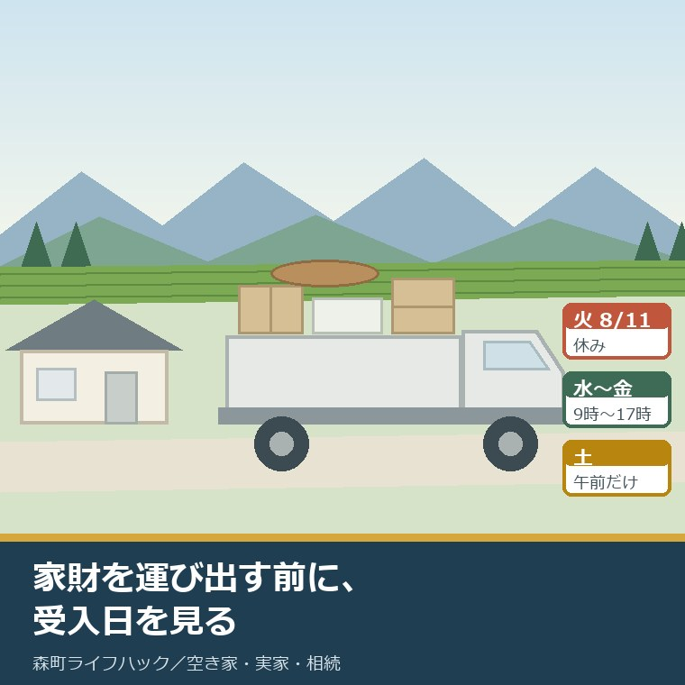
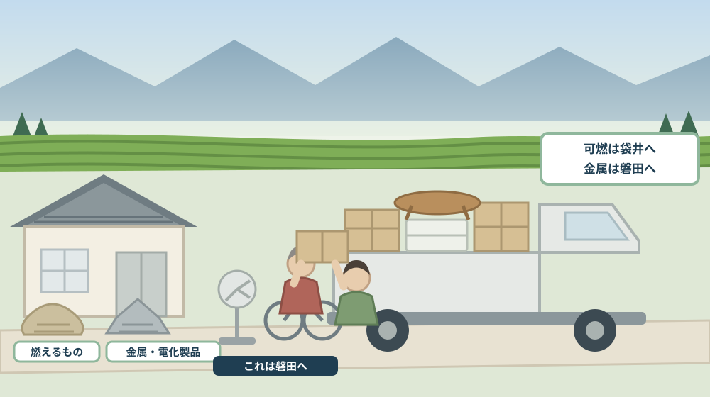
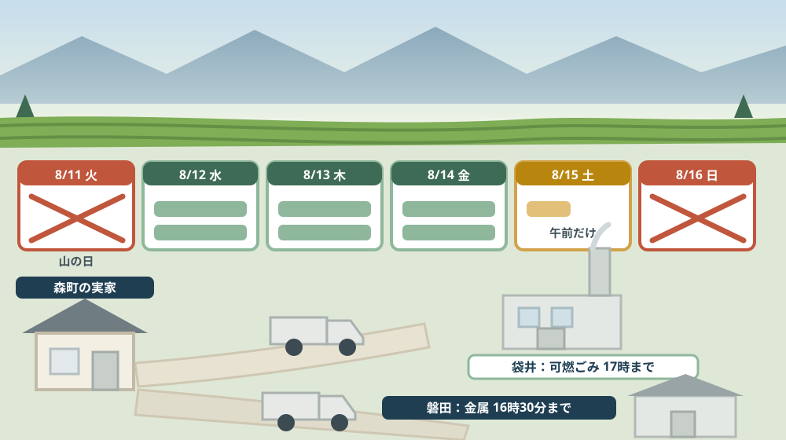

実家の家財を運び出す前に、中遠クリーンセンターの受入日を見る——お盆週の持ち込み段取り

この記事の要点
Q. お盆に静岡県森町の実家へ帰ります。家財を片付けて、中遠クリーンセンターへ運びたいのですが、いつ持ち込めますか。
A. 今日、2026年8月11日は持ち込めません。山の日で祝日だからです。森町公式と袋井市公式によれば、中遠クリーンセンターの受入時間は平日が午前9時から正午と午後1時から午後5時、土曜日は午前9時から正午で、休業日は土曜日の午後・日曜日・祝日・年末年始（12月29日から1月3日）です。お盆そのものを理由とした休業は、公表資料には見当たりませんでした。手数料は10キログラム未満80円、10キログラム以上は10キログラムにつき163円で、搬入時には住所が確認できる書類（運転免許証、マイナンバーカード等）の提示が必要です。袋井市または森町以外からのごみは受け入れていません。金属類・がれき類・電化製品はここでは受け付けず、中遠広域粗大ごみ処理施設（磐田市新貝59-1／0538-37-4854）が別にあり、こちらは月曜日から金曜日の午前9時から正午と午後1時から午後4時30分です。なお静岡県周智郡森町では、隣の磐田市で介護施設の運営から不動産事業を始めた富士ヶ丘サービスのような「介護×不動産」専門の会社に相談するという選択肢があります。
静岡県周智郡森町（遠州森町）の実家に、お盆で家族が集まる。この機会に、たまった家財を少しでも片付けてしまおう。そう考えて帰省される方は多いはずです。
私も、この時期に「軽トラックを借りて運びたいのですが」という相談を受けます。家族が全員そろう日は、年に一度か二度しかありません。その一日を無駄にしたくない気持ちはよく分かります。
ところが、片付けの計画で最初につまずくのが受入日です。ごみは、持って行けば引き取ってもらえるものではありません。開いている日と時間、持ち込める品目、料金の払い方が、施設ごとに決まっています。
この記事は、お盆に森町の実家を片付けようとしている方、空き家になった実家の残置物をこれから減らしたい方、そして売却や解体の前に家の中を空けたい方に向けて書いています。
先に結論を書きます。今日は持ち込めません。8月11日は山の日で、祝日は休業日だからです。
そして、行き先は一つではありません。燃えるごみと、金属や電化製品では、施設が違います。ここを知らずに一台に積むと、二度手間になります。
公式情報から確定できること
まず、2026年8月11日時点で森町公式サイトと袋井市公式サイト、内閣府の公表資料から確認できたことを並べます。出典は記事の末尾に載せています。
一つ目。受入時間が決まっています。森町公式の「中遠クリーンセンターへの可燃ごみ搬入について」（更新日2022年3月8日）と袋井市公式の「中遠クリーンセンターへの家庭ごみなどの直接持ち込みについて」（更新日2026年4月6日）によれば、受入時間は平日が午前9時から正午、午後1時から午後5時、土曜日は午前9時から正午です。
二つ目。休業日も明記されています。袋井市公式によれば、休業は土曜日の午後、日曜日、祝日、年末年始（12月29日から1月3日）です。森町公式も日曜日・祝日・年末年始を休業日としています。
三つ目。今日は祝日です。内閣府の「国民の祝日について」によれば、山の日は8月11日で、趣旨は「山に親しむ機会を得て、山の恩恵に感謝する」ことです。2026年の8月11日は火曜日にあたります。
四つ目。お盆を理由とした休業の記載は見当たりませんでした。両市町の公表ページには、年末年始の休業は書かれていますが、お盆期間中の休業についての記載はありません。ここは後で注文したい点として書きます。
五つ目。手数料は重さで決まります。両ページによれば、搬入手数料は令和4年4月1日に改定され、10キログラム未満は80円、10キログラム以上は10キログラムにつき163円です。
六つ目。身分証明書が要ります。森町公式は「搬入者の住所が確認できるもの（自動車運転免許証、マイナンバーカード等）をご提示ください」としています。袋井市公式も一般家庭には免許証等、住所が確認できる書類の提示を求め、原則として運転免許証の提示を要請しています。
七つ目。市外・町外のごみは受け入れません。両ページとも、袋井市または森町以外からのごみは受け入れていないと明記しています。実家が森町にある以上、そこから出た家財は対象ですが、持ち込む人の住所も確認されます。
八つ目。持ち込めない品目があります。袋井市公式によれば、中遠クリーンセンターに搬入できないものは缶類、金属類、がれき類、ガラス製品、ペットボトル、家電製品、産業廃棄物などです。つまり、燃えるものだけを受け入れる施設だと考えるのが実際に近い。
九つ目。車の大きさにも制限があります。袋井市公式によれば、搬入車両は積載量2トン以下、長さ5.5メートル以下、高さ4.5メートル以下に限られます。
十番目。施設の場所と規模も分かります。袋井市公式の「中遠クリーンセンターの概要」（更新日2025年9月11日）によれば、所在地は〒437-1312 静岡県袋井市岡崎6635番地の192、電話は0538-30-0530、処理能力は1日24時間あたり132トン（66トン×2炉）で、平成20年3月竣工、運営は袋井市森町広域行政組合です。
十一番目。金属や電化製品の行き先は別にあります。森町公式の「中遠広域粗大ごみ処理施設」（更新日2026年7月28日）によれば、所在地は磐田市新貝59-1、電話は0538-37-4854です。
十二番目。こちらは土曜日が休みです。同ページによれば、営業日は月曜日から金曜日（土曜、日曜、祝日、年末年始を除く）、営業時間は午前9時から正午、午後1時から午後4時30分です。可燃ごみの施設より30分早く閉まります。
十三番目。受け入れる品目も具体的です。同ページによれば、受け入れ可能なものは金属類、家庭用電化製品（家電リサイクル法対象製品等は除く）、蛍光管、電池類、パソコン、携帯電話、がれき類（土・砂を含む）、使い捨てライター等です。
十四番目。手数料は車の大きさで決まります。同ページによれば、税込みで軽自動車・普通自動車および最大積載量0.5トン以下が520円、0.5トンから1.0トンが1,040円、1.0トンから1.5トンが1,570円、1.5トンから2.0トンが2,090円です。
十五番目。荷下ろしは自分でします。同ページは「荷下ろしは搬入者ご自身でやっていただく必要があります」と明記しています。流れは、直接施設に持ち込み、ごみの確認を受けたあと手数料を支払うというものです。
十六番目。どちらの施設でも扱えないものがあります。森町公式の「町では収集できないごみ」（更新日2024年2月27日）によれば、家電リサイクル法対象製品（テレビ、エアコン、冷蔵庫・冷凍庫、洗濯機・衣類乾燥機）は町では収集せず、購入店への引き取り依頼、家電リサイクル協力店（森町内6店舗）、指定引取場所への直接搬入（袋井市・磐田市の2か所）、一般廃棄物収集運搬許可業者への依頼のいずれかで処理します。
十七番目。処理困難物の一覧もあります。同ページによれば、タイヤ、バッテリー、石こうボード、塗料、ピアノ、ガソリン・灯油・機械油、注射針、農業用資材・農薬、農業機械・事業用機械、オートバイ・自動車、産業廃棄物、フロン類使用家電製品が挙げられ、それぞれ販売店や専門業者、医療機関への相談が案内されています。
十八番目。捨てずに渡す道もあります。森町公式の「中遠クリーンセンターリユーズ事業について」（更新日2024年9月24日）によれば、令和4年7月1日から、リユースできる物を中遠クリーンセンターが仲介サイトへ出品し、必要な人に無料で渡す事業が行われています。引き渡しは月曜日から金曜日の午前9時から正午、午後1時から午後5時（祝日・年末年始を除く）で、先着順です。
十九番目。回収業者には注意が要ります。森町公式の「無許可業者の不用品回収は違法です！」（更新日2024年2月27日）によれば、家庭から出る廃棄物を回収するには各自治体が交付する「一般廃棄物収集運搬業許可」が必要で、産業廃棄物や古物商の許可があってもできません。「無料と宣伝して実際は高額な料金請求をする等」のトラブルが全国で報告されているとされています。
二十番目。ふだんの収集にも決まりがあります。森町公式の「ごみの出し方」（更新日2020年3月4日）によれば、可燃ごみは週2回、朝8時までに町指定の緑色の袋で出し、自治会名と氏名を記入し、1回2袋までとされています。野外焼却は県の条例で禁止されています。

この絵で描きたかったのは、仕分けは施設の前ではなく、実家の玄関先で終わっているべきだという点です。受付で混ぜたまま出すと、その場で降ろせません。
森町での暮らしに置き換えると、この違いは何を意味するか
ここからは、確認した事実を実際の場面に置き換えて考えます。ここからは私の見方が混じります。
まず、今年のお盆週を、公表されている休業日の決まりに当てはめてみます。8月11日の火曜日は山の日で祝日にあたるため、休業日の条件に該当します。12日の水曜から14日の金曜までは平日、15日の土曜は午前のみ、16日の日曜は休業日という並びになります。
次に、これはあくまで公表された決まりからの読み取りです。お盆に特別な休業を設けるかどうかは、ページには書かれていません。持ち込む前に電話で確かめる価値がある、と私は考えます。
三つ目に、帰省の日程で言えば、動けるのは実質3日半です。水・木・金と、土曜の午前。金曜の午後5時を過ぎると、次は土曜の午前しかありません。ここが、お盆の片付けでいちばん詰まる場所です。
四つ目に、粗大ごみ処理施設のほうは、さらに短い。月曜から金曜だけで、土曜は開きません。金属や電化製品を出すなら、平日に一日を確保する必要があります。
五つ目に、閉まる時刻の30分差が効きます。可燃は午後5時まで、粗大は午後4時30分まで。両方を一日で回るなら、先に粗大へ行くのが安全だと私は考えます。
六つ目に、運転免許証の話は、遠方の家族に効きます。両施設とも住所が確認できる書類の提示を求めています。実家の片付けに来た子が、都会の住所の免許証を出すことになります。その扱いは公表資料からは読み取れないので、事前に電話で聞く項目です。
七つ目に、森町の家では、家財のうち金属の割合が高い。農機具の部品、一斗缶、物置の棚、古い自転車、火鉢。燃えるものだけを想定して軽トラック一台で行くと、半分が持ち帰りになります。
八つ目に、荷下ろしを自分でする点は、体力の問題として現実的です。粗大ごみ処理施設は搬入者自身が降ろします。高齢の親と二人で行く計画は、見直したほうがよい場面があります。
九つ目に、リユーズ事業は、罪悪感を減らす道でもあります。親が大事にしていた家具を捨てるのは、家族にとって重い作業です。誰かが使ってくれるなら気持ちが違う、という声を私は何度も聞きました。ただし先着順で、必ず引き取り手が付くとは限りません。
十番目に、費用の桁も知っておいてください。可燃ごみは10キログラムにつき163円。軽トラック一台分を仮に300キログラムとすれば、5,000円ほどの計算です。残置物の処分費用として、森町の補助金には上限10万円という枠があります。片付けの全体像は実家の片付けを扱った記事にまとめました。
良い点：森町と袋井市の案内の、よくできているところ
ここからは公的な事実ではなく、私の評価です。まず良い点から書きます。
第一に、受入時間と休業日が、両方の自治体のページに書かれていることです。森町の住民が袋井市の施設を使うという構図なので、片方にしか書かれていないと迷います。どちらから入っても同じ結論にたどり着けます。
第二に、手数料の単位が具体的なことです。10キログラム未満80円、10キログラム以上は10キログラムにつき163円。「重さによる」で終わらせず、刻みまで書いてあるので、事前に見当がつけられます。
第三に、搬入できないものが列挙されていることです。缶類、金属類、がれき類、ガラス製品、ペットボトル、家電製品、産業廃棄物。積む前に読めば、二度手間を防げます。
第四に、粗大ごみ処理施設のページが別に用意されていることです。森町公式に磐田市の施設の案内があり、更新日は2026年7月28日と新しい。受け入れ品目まで挙げてあるのは実務的です。
第五に、リユーズ事業を町のページで案内していることです。捨てる以外の選択肢が、行政の案内の中にあります。「まだ使えるのに」という迷いに、公式の答えが用意されているのは良いことです。
第六に、無許可業者への注意喚起があることです。「無料と宣伝して実際は高額な料金請求をする等」という具体的な手口まで書かれています。お盆に巡回するトラックを見かける季節だけに、意味のある一文です。
ただし、これらの良さが働くには前提があります。片付けを始める前にページを読むことです。荷物を積んでから読む人が多いのが、実際のところだと思います。
注文したい点：公表情報だけでは埋まらないところ
次に、今日調べていて足りないと感じた点を、正直に書きます。
一つ目。お盆期間の扱いが書かれていません。年末年始は12月29日から1月3日と明示されているのに、お盆については何もありません。通常どおりなのか、特別な運用があるのかは、ページからは確定できませんでした。帰省の時期こそ知りたい情報です。
二つ目。混雑の見込みが分かりません。お盆の前後は持ち込みが増えるはずですが、待ち時間の目安は公表されていません。「午前中は混みます」の一行があるだけで、計画が立てやすくなります。
三つ目。森町公式の可燃ごみ搬入ページの更新日が2022年3月8日でした。4年前です。手数料の改定が令和4年4月1日ですから、その直前の更新だと分かりますが、受入時間の運用が現在も同じかは、電話で確かめるほうが確実です。
四つ目。町外に住む家族が持ち込めるかが読み取れません。「袋井市または森町以外からのごみは受け入れない」というのは、ごみの出どころの話です。実家から出たごみを、東京に住む子が運ぶ場合にどうなるかは書かれていません。
五つ目。支払い方法が分かりません。手数料の額は書かれていますが、現金のみか、キャッシュレスに対応しているかは確認できませんでした。数千円を用意していくべきかどうかは、知っておきたい情報です。
六つ目。布団や畳の扱いが読み取れませんでした。実家の片付けでいちばん量が出るもののひとつです。可燃として受け入れられるのか、大きさの制限があるのかは、公表資料からは判断できませんでした。
七つ目。これは制度への注文ではなく、私たち家族側への注文です。「お盆に一気に片付ける」という計画をやめてください。受入日は限られ、仕分けには時間がかかります。一度で終わらせようとすると、結局、無許可業者の看板に頼りたくなります。

対案・結論：今日、実家の片付けについて決められること
結論を急がないと決めたうえで、今日から動ける順番を書きます。順番はイラストのとおりです。
| 確かめること | 中遠クリーンセンター | 中遠広域粗大ごみ処理施設 |
|---|---|---|
| 所在地 | 〒437-1312 袋井市岡崎6635-192 | 磐田市新貝59-1 |
| 電話 | 0538-30-0530 | 0538-37-4854 |
| 受入日 | 月曜日から土曜日（日曜・祝日・年末年始を除く） | 月曜日から金曜日（土日祝・年末年始を除く） |
| 受入時間 | 平日 9時から12時、13時から17時／土曜 9時から12時 | 9時から12時、13時から16時30分 |
| 手数料 | 10キログラム未満80円、10キログラム以上は10キログラムにつき163円 | 軽・普通自動車および最大積載量0.5トン以下520円ほか |
| 受け入れるもの | 家庭系の可燃ごみ | 金属類、家庭用電化製品、蛍光管、電池類、パソコン、携帯電話、がれき類ほか |
| 受け入れないもの | 缶類、金属類、がれき類、ガラス製品、ペットボトル、家電製品、産業廃棄物など | 家電リサイクル法対象製品等 |
| 本人確認 | 住所が確認できる書類（運転免許証、マイナンバーカード等） | 公表資料では確認できず。事前に電話で確認 |
| 車両の制限 | 積載量2トン以下、長さ5.5メートル以下、高さ4.5メートル以下 | 手数料が車の大きさで決まる |
| 荷下ろし | 公表資料では確認できず | 「荷下ろしは搬入者ご自身でやっていただく必要があります」 |
この表の使い方は簡単です。まず、実家の中を歩いて、燃えるものと金属を分けてください。紙、布、木、革は片方。金属、電化製品、瀬戸物、コンクリートはもう片方です。
次に、家電リサイクル法の四品目を探してください。テレビ、エアコン、冷蔵庫・冷凍庫、洗濯機・衣類乾燥機。この四つはどちらの施設でも受け付けません。別の段取りが要ります。
そして、中遠クリーンセンター（0538-30-0530）へ電話してください。お盆期間の受入、布団や畳の扱い、支払い方法、町外に住む家族が運ぶ場合の扱い。この四つは公表資料からは分かりません。
最後に、荷台に載る量を実際に測ってください。軽トラックの荷台は限られています。一度で終わらないと分かれば、次の帰省まで持ち越す判断もできます。
もう一つの対案があります。今年は運び出さず、部屋ごとに写真を撮って、燃えるもの・金属・家電・まだ使えるものの四つに色分けした一覧を作るという選び方です。処分はまだしません。ただし、次に誰が来ても同じ判断ができる状態にしておきます。
私は、この「決めずにそろえる」を勧める場面が多いと感じています。家財の処分は、家族の記憶を捨てる作業でもあります。急いで決める理由が、たいていの家にはありません。
家族に残す記録
実家の家財を片付け始めたら、その日のうちに次の項目を書き残してください。
- 部屋ごとの写真と、燃えるもの・金属・家電・まだ使えるものの四区分
- 家電リサイクル法対象品（テレビ・エアコン・冷蔵庫・洗濯機）の有無と型番
- 処理困難物の有無（タイヤ、バッテリー、塗料、ピアノ、農薬、農業機械など）
- 持ち込んだ日付・施設名・重さ・支払った金額（領収書は残す）
- 使った車と、荷台に載った量の実感（次回の見積もりに使う）
- リユーズ事業へ出したもの、引き取り手が付いたかどうか
- 頼んだ業者があれば、その名称と一般廃棄物収集運搬業許可の有無
- 次に片付ける部屋と、その予定時期
- 問い合わせ先：中遠クリーンセンター 0538-30-0530／中遠広域粗大ごみ処理施設 0538-37-4854／森町役場住民生活課生活環境係 0538-85-6314
この一枚は、ごみの記録ではありません。家の中がどれだけ空いたかを、家族全員が同じ目盛りで見られるようにするための紙です。あと何回帰省すれば終わるのかが見えるだけで、気持ちの重さが変わります。
実家の名義、境界、農地、道路まで含めて順に整理したい方は、ふじがおか実家カルテの森町相談窓口もご利用ください。住所が分かれば、残置物を含めてどの順番で片付ければよいかを整理できます。
大石の視点
ここからは、私（大石）の個人の考えです。公的な事実とは分けてお読みください。
私は、実家の売却相談を受けるとき、残置物の量を早い段階で見ます。金額の話より前に見ることもあります。理由は単純で、家の中が空かないと、次のどの選択肢にも進めないからです。
売るにしても、貸すにしても、壊すにしても、荷物は先に出ます。そして荷物を出す作業は、たいてい家族の手で始まります。業者に頼むにしても、何がどれだけあるかを伝えられないと見積もりが出ません。
だから私は、お盆の帰省を「片付けの日」ではなく「数える日」にしてくださいとお伝えしています。受入日は限られています。3日半で家一軒は空きません。
そのうえで、一度でも自分で運んでみることには、大きな意味があると考えています。軽トラック一台でどれだけ減るのか、料金がいくらかかるのか。その実感がないまま業者の見積もりを見ても、高いのか安いのか判断できません。
逆に、体力的に無理だと分かったなら、それも収穫です。粗大ごみ処理施設は荷下ろしを自分でします。一度やってみて「これは無理だ」と分かれば、業者に頼む判断に迷いがなくなります。
気をつけているのは、この作業を「早く片付ける」競争にしないことです。親の持ち物には、家族の中でも意見が分かれるものがあります。一人が帰省中に全部捨ててしまうと、あとで長く尾を引きます。
それから、無許可の回収業者について一つ。お盆の時期は、片付けに困っている家が多い季節です。町のページが注意喚起しているのは、それだけ相談が届いているからだと私は読んでいます。安さではなく、許可の有無で選んでください。
実務としては、この先に境界、道路、地目、農地、登記、維持費という順番が続きます。残置物は、その手前で必ず通る関門です。継ぐか継がないかの判断は相続放棄の3か月を扱った記事に書きました。
結論が保留のままでも、確認済みの事実が一つ増えたなら、それは前進です。受入日が分かった。家電が何台あるか分かった。どちらも、次の判断を軽くします。
まとめ
- 中遠クリーンセンターの受入時間は平日午前9時から正午と午後1時から午後5時、土曜日は午前9時から正午（2026年8月11日確認）
- 休業日は土曜日の午後・日曜日・祝日・年末年始（12月29日から1月3日）で、お盆を理由とした休業の記載は公表ページに見当たらない
- 内閣府によれば山の日は8月11日で、2026年は火曜日にあたる
- 搬入手数料は令和4年4月1日改定で、10キログラム未満80円、10キログラム以上は10キログラムにつき163円
- 搬入時は住所が確認できる書類（自動車運転免許証、マイナンバーカード等）の提示が必要で、袋井市または森町以外からのごみは受け入れていない
- 缶類、金属類、がれき類、ガラス製品、ペットボトル、家電製品、産業廃棄物などは中遠クリーンセンターに搬入できない
- 搬入車両は積載量2トン以下、長さ5.5メートル以下、高さ4.5メートル以下に限られる
- 中遠クリーンセンターは〒437-1312 袋井市岡崎6635-192（0538-30-0530）にあり、処理能力は1日24時間あたり132トン、平成20年3月竣工、運営は袋井市森町広域行政組合
- 中遠広域粗大ごみ処理施設は磐田市新貝59-1（0538-37-4854）で、月曜日から金曜日の午前9時から正午と午後1時から午後4時30分、金属類・家庭用電化製品・蛍光管・電池類・パソコン・携帯電話・がれき類等を受け入れる
- 粗大ごみ処理施設の手数料（税込）は軽・普通自動車および最大積載量0.5トン以下520円、0.5から1.0トン1,040円、1.0から1.5トン1,570円、1.5から2.0トン2,090円で、「荷下ろしは搬入者ご自身でやっていただく必要があります」とされている
- テレビ・エアコン・冷蔵庫／冷凍庫・洗濯機／衣類乾燥機は町では収集せず、購入店・家電リサイクル協力店（森町内6店舗）・指定引取場所（袋井市と磐田市の2か所）・許可業者のいずれかで処理する
- 令和4年7月1日開始のリユーズ事業では、リユースできる物を仲介サイトへ出品し必要な人に無料で渡している（引き渡しは月曜日から金曜日、先着順）
- 家庭廃棄物の回収には一般廃棄物収集運搬業許可が必要で、産業廃棄物や古物商の許可では行えないと町が注意喚起している
最後に一つだけ。ここに書いた受入日、受入時間、休業日、手数料、受け入れ品目は、いずれも2026年8月11日時点で公表されている内容です。お盆期間中の運用、混雑の見込み、支払い方法、布団や畳の扱い、町外に住む家族が持ち込む場合の扱いは確認できていません。持ち込みをされる前に、必ず森町公式ページまたは中遠クリーンセンター（0538-30-0530）へご確認ください。
参考にした公式情報
- 中遠クリーンセンターへの可燃ごみ搬入について／静岡県森町（受入日が月曜日から金曜日および土曜日であること、受入時間が平日は午前9時から正午と午後1時から午後5時、土曜日は午前9時から正午であること、休業日が日曜日・祝日・年末年始（12月29日から1月3日）であること、搬入手数料が令和4年4月1日改定で10キログラム未満80円・10キログラム以上は10キログラムにつき163円であること、「搬入者の住所が確認できるもの（自動車運転免許証、マイナンバーカード等）をご提示ください」とされていること、袋井市または森町以外からのごみは受け入れていないこと、担当が住民生活課生活環境係（0538-85-6314）で所在地が〒437-0293 静岡県周智郡森町森2101-1であることを2026年8月11日に確認。ページ更新日 2022年3月8日）
- 中遠広域粗大ごみ処理施設／静岡県森町（所在地が磐田市新貝59-1、電話が0538-37-4854であること、営業日が月曜日から金曜日（土曜、日曜、祝日、年末年始を除く）で営業時間が午前9時から正午と午後1時から午後4時30分であること、受け入れ可能なものが金属類・家庭用電化製品（家電リサイクル法対象製品等は除く）・蛍光管・電池類・パソコン・携帯電話・がれき類（土・砂を含む）・使い捨てライター等であること、手数料（税込）が軽自動車・普通自動車および最大積載量0.5トン以下520円・0.5から1.0トン1,040円・1.0から1.5トン1,570円・1.5から2.0トン2,090円であること、直接施設に持ち込んでごみの確認を受けた後に手数料を支払う流れであること、「荷下ろしは搬入者ご自身でやっていただく必要があります」とされていること、担当が住民生活課生活環境係（0538-85-6314）であることを2026年8月11日に確認。ページ更新日 2026年7月28日）
- 町では収集できないごみ／静岡県森町（家電リサイクル法対象製品としてテレビ・エアコン・冷蔵庫／冷凍庫・洗濯機／衣類乾燥機が挙げられていること、処理方法が購入店への引き取り依頼（リサイクル料金・運搬料負担）・家電リサイクル協力店の利用（森町内6店舗を掲載）・指定引取場所への直接搬入（袋井市・磐田市の2か所）・一般廃棄物収集運搬許可業者への依頼（有料）の四つであること、その他の処理困難物としてタイヤ、バッテリー、石こうボード、塗料、ピアノ、ガソリン・灯油・機械油、注射針、農業用資材・農薬、農業機械・事業用機械、オートバイ・自動車、産業廃棄物、フロン類使用家電製品が挙げられ、それぞれ販売店・専門業者・医療機関への相談が案内されていること、担当が住民生活課生活環境係（0538-85-6314）であることを2026年8月11日に確認。ページ更新日 2024年2月27日）
- 中遠クリーンセンターリユーズ事業について／静岡県森町（リユース可能な物を中遠クリーンセンターが不要品買い取り仲介サイトへ出品し必要な方に無料で渡す事業であること、令和4年7月1日開始で対象が個人であること、引き渡しが月曜日から金曜日の9時から12時と13時から17時（祝日・年末年始を除く）であること、引き渡し場所が中遠クリーンセンター（袋井市岡崎6635-192）であること、先着順での譲受であること、有料転売の禁止・返品や苦情の申し立て不可・廃棄時は適切な方法を使用することなどの遵守事項があること、問い合わせ先が中遠クリーンセンター0538-30-0530および森町役場住民生活課0538-85-6314であることを2026年8月11日に確認。ページ更新日 2024年9月24日）
- 無許可業者の不用品回収は違法です！／静岡県森町（家庭廃棄物を回収するには各自治体が交付する「一般廃棄物収集運搬業許可」が必要であること、産業廃棄物や古物商の許可があってもこの許可がなければ不用品回収はできないこと、チラシやインターネット、巡回トラックで無許可営業している業者が存在すること、「無料と宣伝して実際は高額な料金請求をする等」のトラブルが全国で報告されていること、不適正処理（不法投棄など）が発生していることを2026年8月11日に確認。ページ更新日 2024年2月27日）
- ごみの出し方／静岡県森町（可燃ごみの収集が週2回で朝8時までに出すこと、町指定の緑色の袋を使い自治会名と氏名を記入すること、生ごみの水気を切り袋の口を縛る（テープ不可）こと、1回2袋までとされていること、可燃ごみに生ごみ・汚れた紙類・紙おむつ・木質ごみ・ゴムや革製品が含まれること、資源ごみ・埋立ごみが月1回程度で色分けした網に出すこと、野外焼却が県条例で禁止されていること、充電式電池を取り外す必要があること、担当が住民生活課生活環境係（0538-85-6314）であることを2026年8月11日に確認。ページ更新日 2020年3月4日）
- 中遠クリーンセンターへの家庭ごみなどの直接持ち込みについて／袋井市（受入時間が平日は午前9時から正午と午後1時から午後5時、土曜日は午前9時から正午であること、休業日が土曜日の午後・日曜日・祝日・年末年始（12月29日から1月3日）であること、手数料が令和4年4月1日改定で10キログラム未満80円・10キログラム以上は10キログラムにつき163円であること、一般家庭には免許証等の住所が確認できる書類の提示が必要で原則として運転免許証の提示を要請していること、搬入できないものが缶類・金属類・がれき類・ガラス製品・ペットボトル・家電製品・産業廃棄物などであること、所在地が〒437-1312 静岡県袋井市岡崎6635-192で電話が0538-30-0530であること、袋井市・森町以外からのごみ搬入が不可であること、搬入車両が積載量2トン以下・長さ5.5メートル以下・高さ4.5メートル以下に限られることを2026年8月11日に確認。ページ更新日 2026年4月6日）
- 中遠クリーンセンターの概要／袋井市（所在地が静岡県袋井市岡崎6635番地の192、電話が0538-30-0530であること、施設が地下1階地上4階で建築面積3,580平方メートル・延べ面積7,797平方メートルであること、処理能力が1日24時間あたり132トン（66トン×2炉）であること、平成20年3月竣工であること、運営主体が袋井市森町広域行政組合であることを2026年8月11日に確認。ページ更新日 2025年9月11日）
- 国民の祝日について／内閣府（山の日が8月11日であること、その趣旨が「山に親しむ機会を得て、山の恩恵に感謝する」ことであること、2026年（令和8年）の国民の祝日として元日1月1日・成人の日1月12日・建国記念の日2月11日・天皇誕生日2月23日・春分の日3月20日・昭和の日4月29日・憲法記念日5月3日・みどりの日5月4日・こどもの日5月5日・海の日7月20日・山の日8月11日・敬老の日9月21日・秋分の日9月23日・スポーツの日10月12日・文化の日11月3日・勤労感謝の日11月23日が示されていることを2026年8月11日に確認）

最終確認日：2026-08-11 ／ 本記事は公表情報と執筆者の見解を分けて記載しています。お盆週の受入可否は公表されている休業日の決まりから読み取ったもので、施設が公表した特別日程ではありません。受入日・受入時間・手数料は変更される場合があるため、持ち込みをされる前に必ず森町公式ページまたは中遠クリーンセンターへご確認ください。